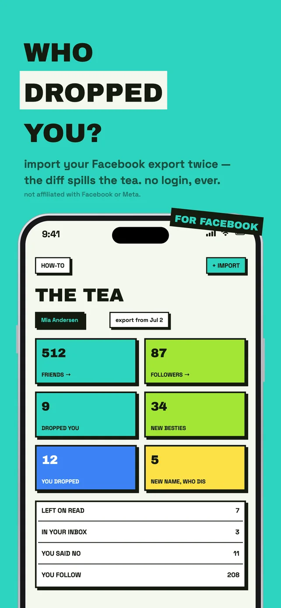
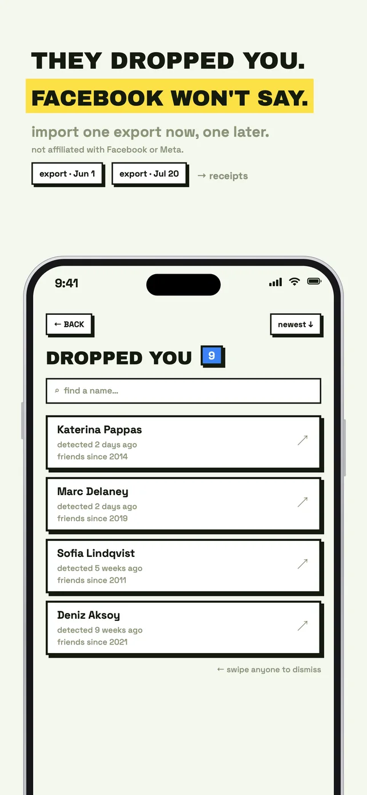
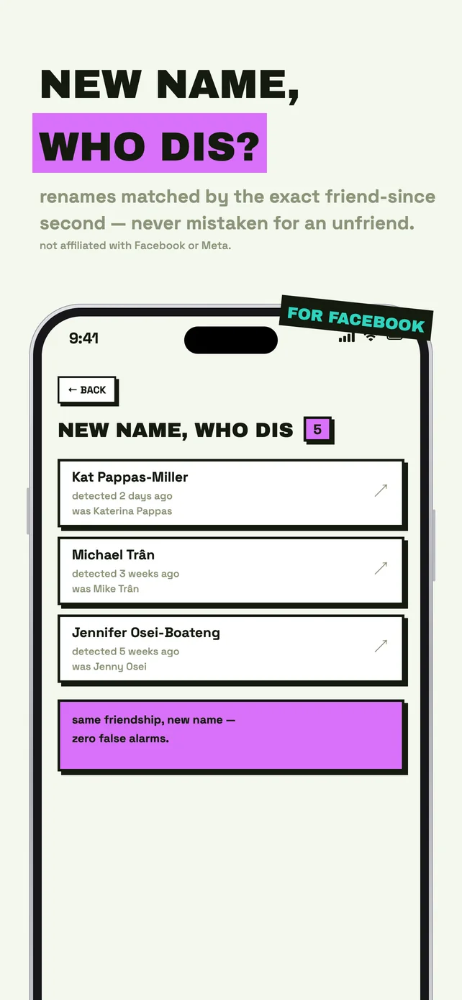
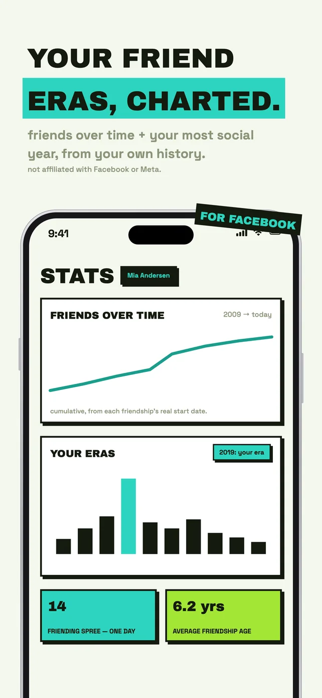
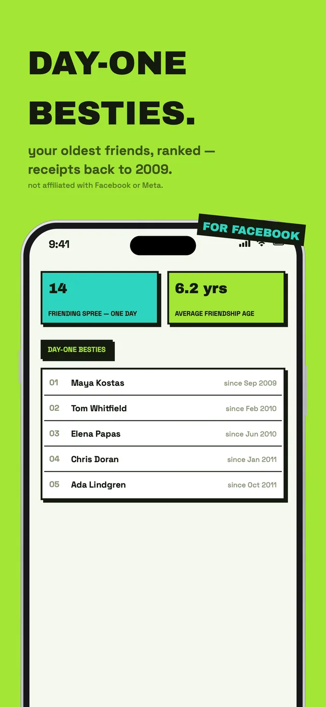
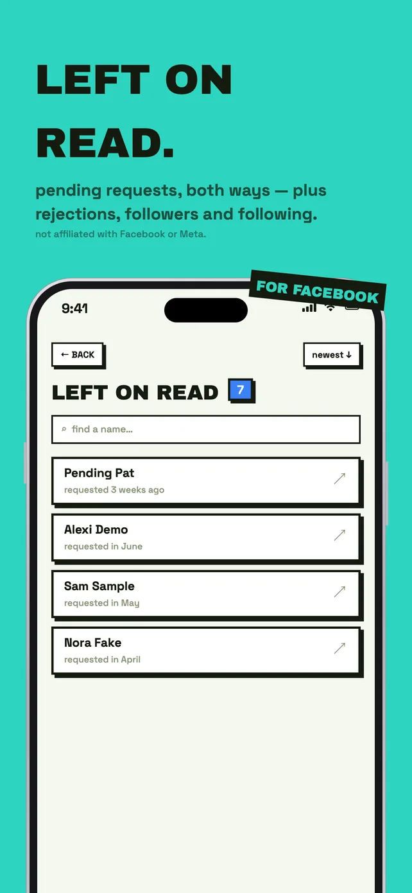
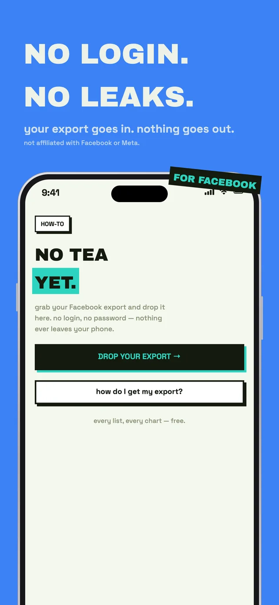

Unfriended
Find out who unfriended you on Facebook.







Facebook friendship is mutual, so no single snapshot can show who left. Unfriended compares two of your own Facebook data exports, a few weeks apart, and shows exactly what changed. All on your iPhone, with zero network requests.
Who dropped you
Friends who unfriended you, deactivated, or deleted their account.
Renames, not false alarms
Name changes are matched by the exact second a friendship began, so a new name never looks like an unfriend.
Your own removals
Kept apart using Facebook's own record, with real dates.
Requests and followers
Requests left unanswered, rejections, followers and following.
Your friendship history
Friends over time, your most social year, and your oldest friends, ranked.
A one-minute how-to
The app shows every tap it takes to download your export from Facebook.
- The app makes no network connections at all.
- Your Facebook export is read and stored only on your iPhone.
- No login, no account, no analytics, no ads.
Unfriended is an independent app, not affiliated with Facebook or Meta.